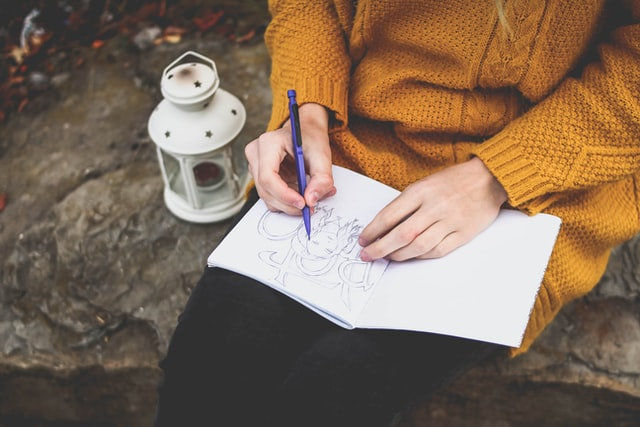
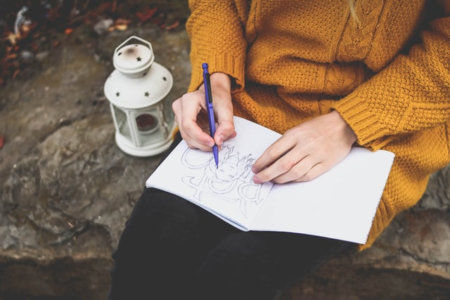

Образование
Психология на английски език - Нов български университет (2014-2018)

Интереси
Когато имам време за себе си, обичам да чета книги, да излизам с приятели, да рисувам.
 

Любима книга
Поредицата за Хари Потър (чак на тези години я чета)
Любим филм
Сред първенците за мен е "Красив ум"
Очаквам да положа основите на познанията си в областта на front-end web development.
Курсовият ми проект искам да е сайт за магазин за мед и пчелни продукти.
За курса разбрах от една приятелка, която го завърши.